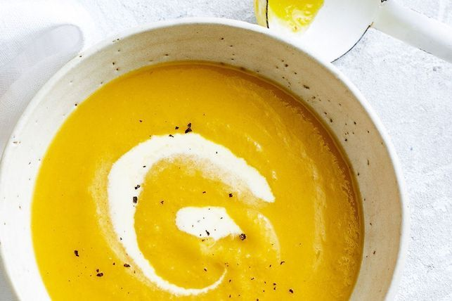

Pumpkin Soup

The beauty of pumpkin soup (and this classic pumpkin soup recipe in particular) is that it’s so versatile and forgiving. It’s one of the easiest meals to make with just a handful of ingredients, and it’s almost impossible to mess up. We love easy soup recipes, and know our community of home cooks do too.
Ingredients
- 2 tbsp Coles Classic Olive Oil
- 1 onion, finely chopped
-
1 leek, white part only, finely sliced
-
1 garlic clove, crushed
- 1/2 tsp ground coriander
- 1 tsp ground cumin
- 1/2 tsp freshly grated nutmeg
-
1kg peeled pumpkin, diced
- 1 large potato, peeled, diced
- 1L Massel chicken style liquid stock or vegetable liquid stock
-
1/2 cup (125ml) thin cream
Recipe Instruction
- Heat oil in a large saucepan over low heat, add onion and leek and cook for 2-3 minutes, until softened but not coloured.
- Add garlic and spices and cook, stirring, for 30 seconds. Add pumpkin, potato and stock and bring to the boil. Turn heat to low, cover and simmer for 30 minutes. Allow to cool slightly, then blend in batches.
-
Return soup to pan, stir through cream and reheat gently. Season and add a little more nutmeg if desired.